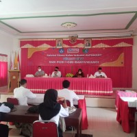

BERITA TERBARU
Menyajikan informasi di SMK PGRI ! GIRI BANYUWANGI

BERITA TERBARU
SMK Grisawangi (SMK PGRI 1 GIRI Banyuwangi) Selenggarakan Seleksi Siswa Kelas Industri Alfamart
(8/10)-SMK PGRI 1 Giri Banyuwangi (GRISAWANGI) telah…
READ MORE...
BERITA TERBARU
PPDB SMK PGRI 1 GIRI BANYUWANGI TAHUN AJARAN 2021-2022
Penerimaan Peserta Didik Baru (PPDB) SMK PGRI 1 GIRI…
READ MORE...BERITA TERBARU
Semangat Berprestasi
Selamat kepada siswa2 berprestasi meraih Juara 2 Lomba…
READ MORE...